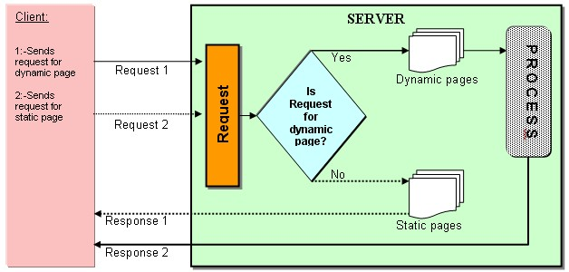

Introduction
Java Server Pages (JSPs) are a Sun Microsystems specification for combining Java with HTML to provide dynamic content for Web pages. When you create dynamic content, JSPs are more convenient to write than HTTP servlets because they allow you to embed Java code directly into your HTML pages, in contrast with HTTP servlets, in which you embed HTML inside Java code.
What You Can Do with JSPs
- Combine Java with HTML to provide dynamic content for Web pages.
- Static content comprising of regular HTML.
- Dynamic content comprising of Java code.
- Call custom Java classes, called taglibs, using HTML-like tags.
- Embed Java code directly into your HTML pages, in contrast with HTTP servlets, in which you embed HTML inside Java code.
- Separate the dynamic content of a Web page from its presentation.
Overview of How JSP Requests Are Handled
WebLogic Server handles JSP requests in the following sequence:
- A browser requests a page with a .jsp file extension from WebLogic Server
- WebLogic Server reads the request.
- Using the JSP compiler, WebLogic Server converts the JSP into a servlet class that implements the javax.servlet.jsp.JspPage interface. The JSP file is compiled only when the page is first requested, or when the JSP file has been changed. Otherwise, the previously compiled JSP servlet class is re-used, making subsequent responses much quicker.
- The generated JspPage servlet class is invoked to handle the browser request.

Our Learnings of Java Server Pages
JavaServer pages is also a web service technology that functions to liten for request and send out response with the Html. It allows web developers to esily design, implement and maintain dynamic web pages (combining static HTML with Java Code) being applied in the system. JavaServer Pages are also Html web pages, but the main difference is that JSP contains executable code application logic that is used to generate its dynamic content